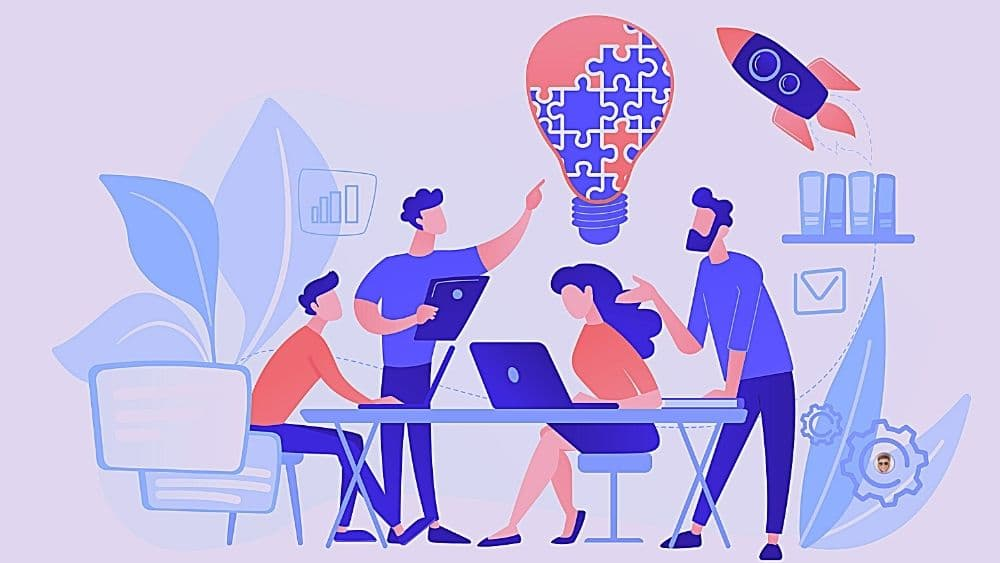
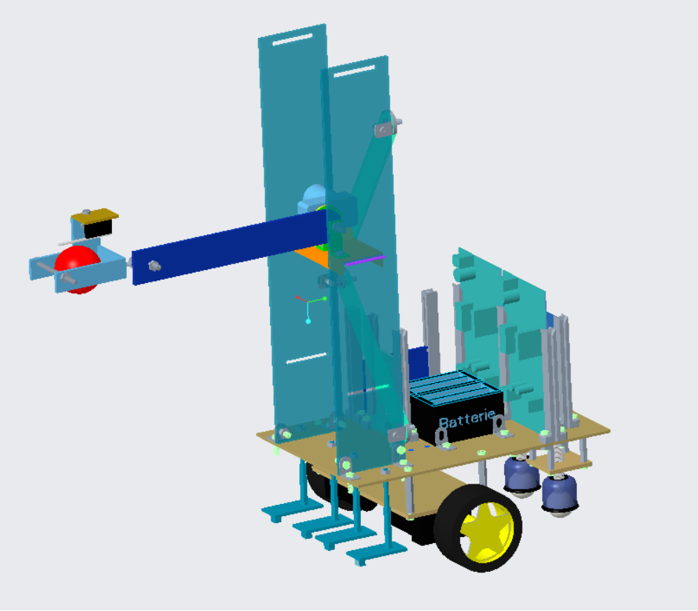
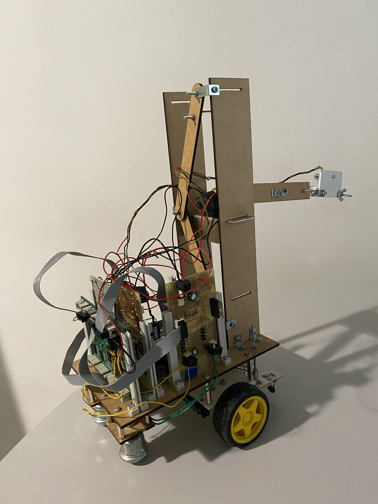
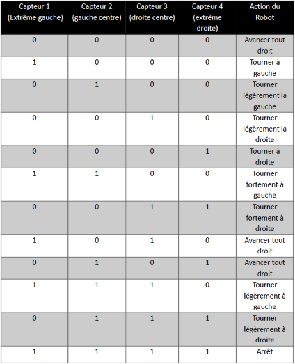
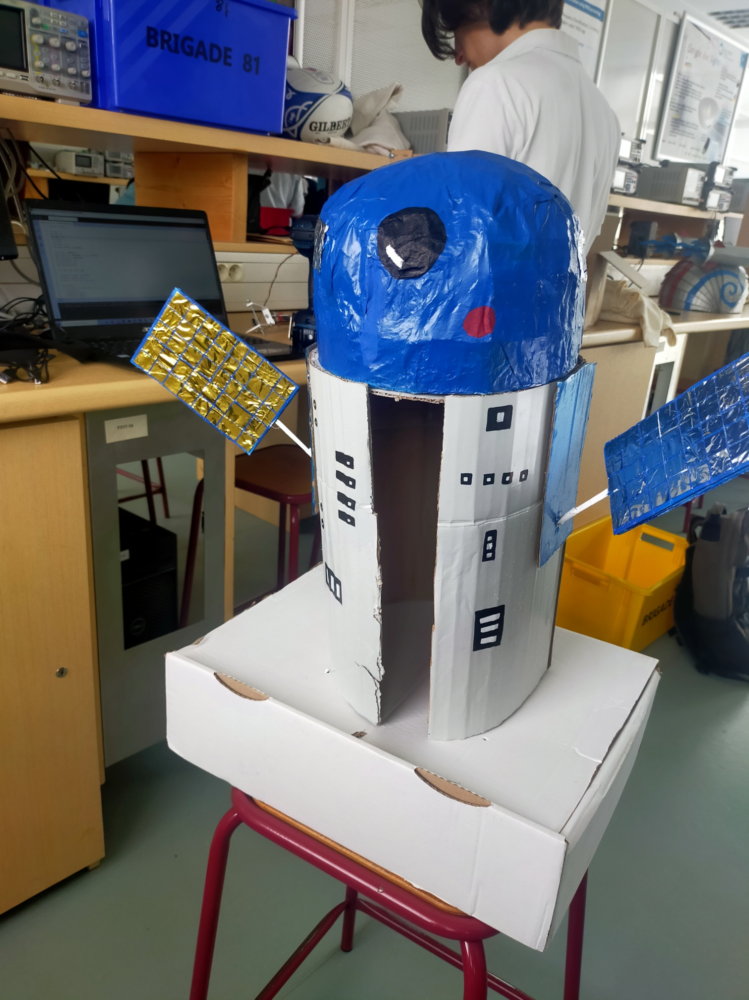
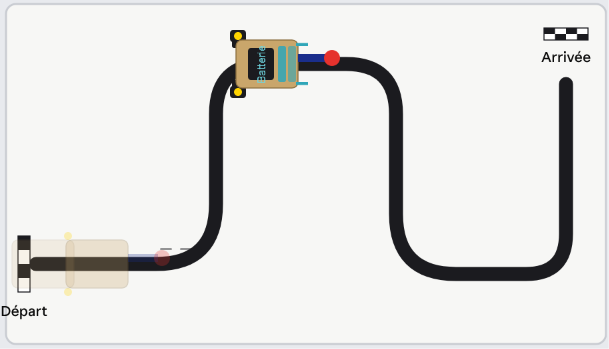

Projet 02 · Robotique
Conception d’un robot suiveur de ligne
Dans le cadre d’un projet en équipe à Polytech, nous avons conçu et réalisé un robot capable de suivre une ligne et d’effectuer une « satellisation ». Cette page présente les grandes étapes du projet.
Choix de la solution et brainstorming
Durant cette étape, l'objectif était, à partir du sujet, de trouver différentes solutions possibles pour répondre à la problématique: Pouvoir mettre en orbite notre satellite (représenté par une balle qui s'accrocherait avec du velcro sur une autre balle).

Source : audreytips.com
Conception
Après avoir déterminé notre solution, nous sommes passés à la phase de conception. Le bâti nous était donné, et nous devions définir l'emplacement de nos éléments sur notre robot, puis concevoir notre solution. Nous étions parti sur une solution de bras articulé, qui viendrait déposer la balle. Comme plusieurs objectifs étaient réalisable (3 planètes différentes), nous avons choisi pour s'adapter, de créer un système d'étagère glissable. Nous avons réalisé cette conception sur le logiciel CREO.

Montage
Nous sommes passé ensuite à la phase de montage. Au préalable, nos pièces avaient été fabriquées au Fablab (découpe) et pliées (pour les pièces metalliques). A plusieurs reprises, nous avosn dû nous adapter pour monter notre robot. L'une des parties les plus complexes était la mise en place des capteurs qui permettraient de suivre la ligne.'

Programmation et phase de test
Pour cette partie, nous avons utilisés nos compétences de codage en arduino pour permettre au robot de suivre correctement les lignes. Une piste d'essai était mise à dispostion pour tester notre robot. En répétant ces tests, nous avons finalement réussi à atteindre le bout de la piste.

Tableau du principe de programmation du suivi de ligne
Design de la coque
Pour améliorer l'apsect esthétique de notre robot, nous avons créé une coque. Notre robot s'appelant R2 Explorer, nous avons choisi d'imiter l'appararence du droïde R2-D2.

Épreuve finale
Le jour de l'épreuve, nous sommes parvenu à suivre la ligne, mais n'avaons pas atteint la fin de la piste et l'objectif.
